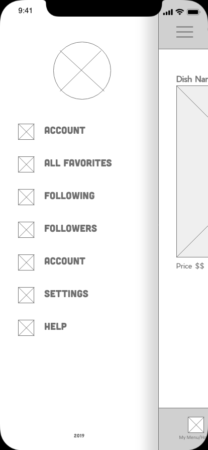
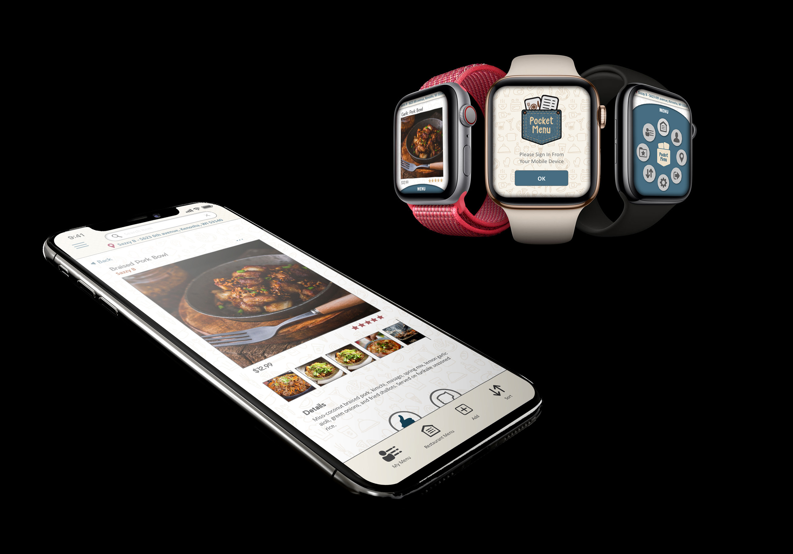

Pocket Menu
Scroll to view
Summary
Pocket Menu is an application users can use to store information about their favorite food dishes when they go
out. A user logs into the main screen where they then see a location screen each time the app is opened. From this
screen they select the location of the restaurant they want to view their menu and the restaurants menu of. The
current location they selected is then displayed at the top of the screen until changed. The first screen displays
the users personal menu created at that location. They also have the option to view the restaurants entire menu
where they can add new items to their menu as well as rate and/or like or dislike a dish. They have options for
adding their own photos. There is a search bar which allows them to search a food style or the name of dish from
their personal menu or the restaurants menu depending on which screen they are in. In addition there is a side
drawer with a few more options. From here users can follow friends menus for inspiration as well as see over all
rating for each dish. Also in the side drawer is another way of changing location, settings, and account info.
Style Boards
The purpose of the style boards is to capture the look and feel of the over all app. The design is meant to
capture a warm homey feel that can suit any style food dish. The color choices are natural which allow the vibrant
images of the dishes to pop on screen and look more appealing. I think coming up with color schemes can be one of
the first challenges in designing anything. The colors really set the tone for a design and influence the form of
of it, such as the icons, textures, layout and more.
Low Fidelity iPhone Screens

Low Fidelity Apple Watch Screens
Low fidelity artboards, though rough and little detail help to lay out the overall design and functionality. This
is where the app gets its shell.
Design Elements
Logo

|
Background
|
|
Icons
|
Sample Images


Site Map
The site map gives an overview of all possible paths a user can follow from one screen to the next. This helps
understand all screens that will eventually be needed in production of the application.
High Fidelity Screens
Many revisions were made before finalizing these preview screens. One of the biggest challenges is screen size. As
an example, a struggle was with the text size for the watch version. When designing on a computer screen it is
much larger and a design may look perfect until you shrink it down to its actual scale, the type then maybe be
illegible or too difficult to read. Over all it was a fun project, getting feedback from others helped a lot in
refining and tweaking small design weaknesses.
User Testing
UI Patterns and/or Principles
 |
Testing has been going on throughout all phases from concept to high renderings. However here you see
examples of users testing a prototype of the application. The colored heat spots indicate where users
tapped after being asked to perform a specific task. I am pleased to say the major hot spots are where
they should be. There were other test performed as well which indicated some need for tweaking. In
addition in person questionnaires were completed by users with added another element of critiques. Testing
is a critical part of the design process since at the end of the day it is the users who will being using
your application and it they who needs to be happy. Users find it too difficult or have a bad UX they will
quit the app and use another one.
|
Display Samples

MARK MCKINNEY

MOBILE DEVELOPMENT
INTERFACES AND USIBILITY